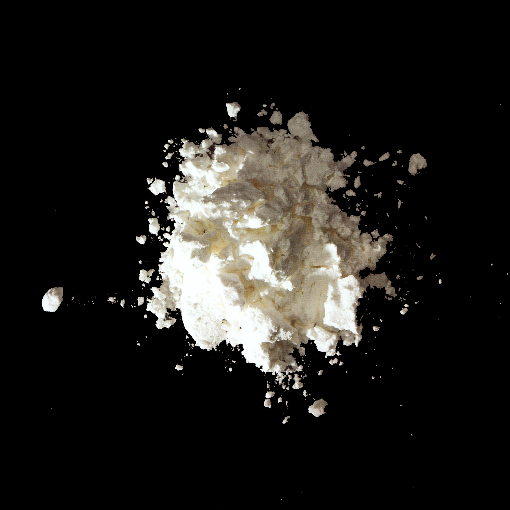

Cornstarch

9005-25-8
Synonyms or siblings
Cornflour starch, Maize starch, Unmodified cornstarch
Funtion
Process and Prep - Thickening Agent, Powder Flow Agent
Description
Cornstarch, a dried starch slurry, has been used since ancient times and is produced in the U.S. using presses and dryers. It thickens sauces, keeps mixes dry, and adds body to various foods. Despite being a household staple, only 7% of U.S. cornstarch production is used in food; the majority goes into paper, cardboard, biodegradable packaging, textiles, and eco-friendly products.
다양한 이름
옥수수 녹말, 콘스타치,
기능
점증제, 연마제
설명
옥수수 전분은 옥수수 종자배유에서 채취한 전분(녹말 가루)으로 고깃국물 소스 따위를 진하게 하거나 푸딩. 아이스크림을 만들 때 쓰인다. 다양한 음식에 바디감을 더해주는 유용한 식품첨가물이지만, 미국에서 생산되는 옥수수 전분의 7%만이 식품에 사용되고, 대부분은 종이, 판지, 생분해성 포장재, 직물 및 친환경 제품 제작에 사용된다.